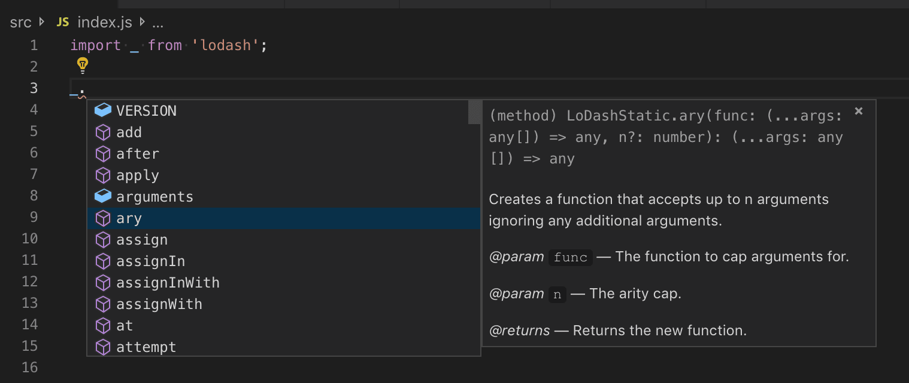
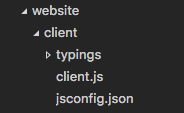
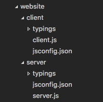
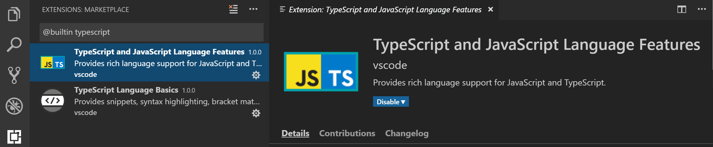
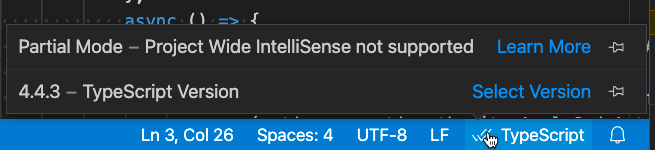

使用 JavaScript
本主题介绍了 Visual Studio Code 支持的一些高级 JavaScript 功能。通过使用 TypeScript 语言服务，VS Code 可以为 JavaScript 提供智能补全（IntelliSense）以及类型检查。
IntelliSense
Visual Studio Code 的 JavaScript IntelliSense 提供了智能代码补全、参数信息、引用搜索以及许多其他高级语言功能。我们的 JavaScript IntelliSense 由 TypeScript 团队开发的 JavaScript 语言服务 提供支持。虽然大多数 JavaScript 项目无需任何配置即可使用 IntelliSense，但您可以通过 JSDoc 或配置 jsconfig.json 项目使 IntelliSense 更加有用。
有关 JavaScript IntelliSense 工作原理的详细信息，包括基于类型推断、JSDoc 注解、TypeScript 声明以及混合 JavaScript 和 TypeScript 项目的内容，请参阅 JavaScript 语言服务文档。
当类型推断无法提供所需信息时，可以通过 JSDoc 注解显式提供类型信息。本文档描述了当前支持的 JSDoc 注解。
除了对象、方法和属性之外，JavaScript IntelliSense 窗口还为您文件中的符号提供基本的单词补全。
类型定义和自动类型获取
JavaScript 库和框架的 IntelliSense 由 TypeScript 类型声明（typings）文件提供支持。类型声明文件使用 TypeScript 编写，因此可以表达参数和函数的数据类型，使 VS Code 能够以高效的方式提供丰富的 IntelliSense 体验。
许多流行的库都附带了 typings 文件，因此您可以自动获取它们的 IntelliSense。对于不包含 typings 的库，VS Code 的 自动类型获取 将自动为您安装社区维护的 typings 文件。
自动类型获取需要 npmjs，它是随 Node.js 运行时一起提供的 Node.js 包管理器。在此图中，您可以看到流行库 lodash 的 IntelliSense，包括方法签名、参数信息和方法文档。

类型声明文件由 Visual Studio Code 自动下载和管理，适用于项目 package.json 中列出的包或您导入到 JavaScript 文件中的包。
{
"dependencies": {
"lodash": "^4.17.0"
}
}您也可以在 jsconfig.json 中明确列出要获取类型声明文件的包。
{
"typeAcquisition": {
"include": [
"jquery"
]
}
}大多数常见的 JavaScript 库都附带了声明文件或已有类型声明文件可用。
修复自动类型获取时出现的 npm 未安装警告
自动类型获取 使用 npm（Node.js 包管理器）来安装和管理类型声明（typings）文件。为确保自动类型获取正常工作，请首先确保您的计算机上已安装 npm。
在终端或命令提示符中运行 npm --version 可快速检查 npm 是否已安装且可用。
npm 随 Node.js 运行时一起安装，可从 Nodejs.org 下载。安装当前的 LTS（长期支持）版本，npm 可执行文件将默认添加到您的系统路径中。
如果您已安装 npm 但仍然看到警告消息，您可以使用 js/ts.tsserver.npm.path 设置 来明确告诉 VS Code npm 的安装位置。此设置应设为您计算机上 npm 可执行文件的完整路径，并且不必与您用于管理工作区中包的 npm 版本匹配。js/ts.tsserver.npm.path 需要 TypeScript 2.3.4+。
例如，在 Windows 上，您可以在 settings.json 文件中添加如下路径：
{
"js/ts.tsserver.npm.path": "C:\\Program Files\\nodejs\\npm.cmd"
}JavaScript 项目 (jsconfig.json)
目录中存在 jsconfig.json 文件表示该目录是 JavaScript 项目的根目录。jsconfig.json 指定了 JavaScript 语言服务 提供的语言功能的根文件和选项。对于常见设置，不需要 jsconfig.json 文件，但是在某些情况下您可能需要添加 jsconfig.json。
- 并非所有文件都应包含在您的 JavaScript 项目中（例如，您希望排除某些文件不显示 IntelliSense）。这种情况在前端和后端代码中很常见。
- 您的工作区包含多个项目上下文。在这种情况下，您应该为每个项目在根文件夹中添加一个
jsconfig.json文件。 - 您正在使用 TypeScript 编译器对 JavaScript 源代码进行降级编译。
jsconfig.json 的位置
要将我们的代码定义为 JavaScript 项目，请在 JavaScript 代码的根目录下创建 jsconfig.json，如下所示。JavaScript 项目是项目的源文件，不应包含派生或打包文件（如 dist 目录）。

在更复杂的项目中，您可能在工作区中定义了多个 jsconfig.json 文件。您需要这样做，以便一个项目中的源代码不会出现在另一个项目的 IntelliSense 中。
下图展示了一个包含 client 和 server 文件夹的项目，显示两个独立的 JavaScript 项目：

编写 jsconfig.json
下面是一个简单的 jsconfig.json 文件模板，它定义了 JavaScript target 为 ES6，并且 exclude 属性排除了 node_modules 文件夹。您可以将此代码复制并粘贴到您的 jsconfig.json 文件中。
{
"compilerOptions": {
"module": "CommonJS",
"target": "ES6"
},
"exclude": [
"node_modules",
"**/node_modules/*"
]
}exclude 属性告诉语言服务哪些文件不属于您的源代码。如果 IntelliSense 运行缓慢，请将文件夹添加到 exclude 列表中（如果 VS Code 检测到补全速度缓慢，会提示您这样做）。您需要 exclude 构建过程生成的文件（如 dist 目录）。这些文件会导致建议重复出现，并会降低 IntelliSense 的速度。
您可以使用 include 属性显式设置项目中的文件。如果没有 include 属性，则默认包含所在目录及其子目录中的所有文件。当指定了 include 属性时，只包含这些文件。
以下是带有显式 include 属性的示例：
{
"compilerOptions": {
"module": "CommonJS",
"target": "ES6"
},
"include": [
"src/**/*"
]
}最佳实践且最不容易出错的方法是使用单个 src 文件夹配合 include 属性。请注意，exclude 和 include 中的文件路径是相对于 jsconfig.json 的位置。
有关更多信息，请参阅完整的 jsconfig.json 文档。
迁移到 TypeScript
可以实现 TypeScript 和 JavaScript 项目的混合。要开始迁移到 TypeScript，请将 jsconfig.json 文件重命名为 tsconfig.json 并将 allowJs 属性设置为 true。有关更多信息，请参阅 从 JavaScript 迁移。
注意：jsconfig.json与tsconfig.json文件相同，只是allowJs设置为 true。请参阅 此处tsconfig.json的文档 以查看其他可用选项。
类型检查 JavaScript
VS Code 允许您在常规 JavaScript 文件中利用 TypeScript 的一些高级类型检查和错误报告功能。这是捕获常见编程错误的好方法。这些类型检查还为 JavaScript 启用了一些令人兴奋的快速修复，包括 添加缺少的导入 和 添加缺少的属性。

TypeScript 可以在 .js 文件中推断类型，就像在 .ts 文件中一样。当无法推断类型时，可以使用 JSDoc 注释来指定。您可以在 类型检查 JavaScript 文件 中阅读有关 TypeScript 如何使用 JSDoc 进行 JavaScript 类型检查的更多信息。
JavaScript 的类型检查是可选的且需要主动启用。现有的 JavaScript 验证工具（如 ESLint）可以与新的内置类型检查功能一起使用。
您可以根据需要以几种不同的方式开始使用类型检查。
按文件
在 JavaScript 文件中启用类型检查的最简单方法是在文件顶部添加 // @ts-check。
// @ts-check
let itsAsEasyAs = 'abc'
itsAsEasyAs = 123 // Error: Type '123' is not assignable to type 'string'如果您只想在少数几个文件中尝试类型检查，但尚未想为整个代码库启用，使用 // @ts-check 是一个不错的方法。
使用设置
要在不更改任何代码的情况下为所有 JavaScript 文件启用类型检查，只需将 "js/ts.implicitProjectConfig.checkJs": true 添加到工作区或用户设置中。这将为不属于 jsconfig.json 或 tsconfig.json 项目的任何 JavaScript 文件启用类型检查。
您可以通过在文件顶部添加 // @ts-nocheck 注释来为单个文件禁用类型检查：
// @ts-nocheck
let easy = 'abc'
easy = 123 // no error您还可以在错误行之前使用 // @ts-ignore 注释来禁用 JavaScript 文件中的单个错误：
let easy = 'abc'
// @ts-ignore
easy = 123 // no error使用 jsconfig 或 tsconfig
要为属于 jsconfig.json 或 tsconfig.json 的 JavaScript 文件启用类型检查，请在项目的编译器选项中添加 "checkJs": true：
jsconfig.json：
{
"compilerOptions": {
"checkJs": true
},
"exclude": [
"node_modules",
"**/node_modules/*"
]
}tsconfig.json：
{
"compilerOptions": {
"allowJs": true,
"checkJs": true
},
"exclude": [
"node_modules",
"**/node_modules/*"
]
}这将为项目中的所有 JavaScript 文件启用类型检查。您可以使用 // @ts-nocheck 为每个文件禁用类型检查。
JavaScript 类型检查需要 TypeScript 2.3。如果您不确定工作区中当前激活的 TypeScript 版本，请运行 TypeScript: Select TypeScript Version 命令进行检查。您必须在编辑器中打开一个 .js/.ts 文件才能运行此命令。如果您打开一个 TypeScript 文件，版本会显示在右下角。
全局变量和类型检查
假设您正在处理使用全局变量或非标准 DOM API 的旧版 JavaScript 代码：
window.onload = function() {
if (window.webkitNotifications.requestPermission() === CAN_NOTIFY) {
window.webkitNotifications.createNotification(null, 'Woof!', '🐶').show()
} else {
alert('Could not notify')
}
}如果您尝试对上述代码使用 // @ts-check，您将看到一些关于全局变量使用的错误：
Line 2-Property 'webkitNotifications' does not exist on type 'Window'.Line 2-Cannot find name 'CAN_NOTIFY'.Line 3-Property 'webkitNotifications' does not exist on type 'Window'.
如果您想继续使用 // @ts-check 但确信这些不是应用程序的实际问题，您需要让 TypeScript 了解这些全局变量。
首先，在项目根目录 创建一个 jsconfig.json：
{
"compilerOptions": { },
"exclude": [
"node_modules",
"**/node_modules/*"
]
}然后重新加载 VS Code 以确保更改已应用。jsconfig.json 的存在让 TypeScript 知道您的 JavaScript 文件是更大项目的一部分。
现在，在您的工作区中某处创建一个 globals.d.ts 文件：
interface Window {
webkitNotifications: any;
}
declare var CAN_NOTIFY: number;d.ts 文件是类型声明。在本例中，globals.d.ts 让 TypeScript 知道存在全局变量 CAN_NOTIFY，并且 window 上存在 webkitNotifications 属性。您可以在 TypeScript 文档 中阅读有关编写 d.ts 的更多信息。d.ts 文件不会改变 JavaScript 的评估方式，它们仅用于提供更好的 JavaScript 语言支持。
使用任务
使用 TypeScript 编译器
TypeScript 的关键特性之一是能够使用最新的 JavaScript 语言特性，并生成可以在尚未理解这些新特性的 JavaScript 运行环境中执行的代码。JavaScript 使用相同的语言服务，因此它现在也可以利用这一特性。
TypeScript 编译器 tsc 可以将 JavaScript 文件从 ES6 降级编译到另一个语言级别。使用所需的选项配置 jsconfig.json，然后使用 –p 参数让 tsc 使用您的 jsconfig.json 文件，例如 tsc -p jsconfig.json 进行降级编译。
在 jsconfig 文档 中阅读有关降级编译的编译器选项的更多信息。
运行 Babel
Babel 转译器将 ES6 文件转换为可读的 ES5 JavaScript 并附带 Source Maps。您可以通过将以下配置添加到 tasks.json 文件（位于工作区的 .vscode 文件夹下）来轻松地将 Babel 集成到您的工作流中。group 设置将此任务设为默认的 任务：运行构建任务 手势。isBackground 告诉 VS Code 在后台保持运行此任务。要了解更多信息，请访问 任务。
{
"version": "2.0.0",
"tasks": [
{
"label": "watch",
"command": "${workspaceFolder}/node_modules/.bin/babel",
"args": ["src", "--out-dir", "lib", "-w", "--source-maps"],
"type": "shell",
"group": { "kind": "build", "isDefault": true },
"isBackground": true
}
]
}添加此配置后，您可以使用 kb(workbench.action.tasks.build)（运行构建任务）命令启动 Babel，它将把 src 目录中的所有文件编译到 lib 目录中。
提示： 有关 Babel CLI 的帮助，请参阅 使用 Babel 中的说明。上面的示例使用了 CLI 选项。
禁用 JavaScript 支持
如果您更喜欢使用其他 JavaScript 语言工具（如 Flow）支持的 JavaScript 语言功能，您可以禁用 VS Code 内置的 JavaScript 支持。您可以通过禁用内置的 TypeScript 语言扩展 TypeScript and JavaScript Language Features (vscode.typescript-language-features) 来实现，该扩展也提供了 JavaScript 语言支持。
要禁用 JavaScript/TypeScript 支持，请转到扩展视图 (kb(workbench.view.extensions))，筛选内置扩展（在 ... 更多操作 下拉菜单中选择 显示内置扩展），然后输入 'typescript'。选择 TypeScript and JavaScript Language Features 扩展，然后按下 禁用 按钮。VS Code 内置扩展不能卸载，只能禁用，并且可以随时重新启用。

部分 IntelliSense 模式
VS Code 尝试为 JavaScript 和 TypeScript 提供项目范围的 IntelliSense，这使得自动导入和 转到定义 等功能成为可能。但是，在某些情况下，VS Code 仅限于处理您当前打开的文件，而无法加载构成 JavaScript 或 TypeScript 项目的其他文件。
这可能在以下情况下发生：
- 您在 vscode.dev 或 github.dev 上处理 JavaScript 或 TypeScript 代码，并且 VS Code 在浏览器中运行。
- 您从虚拟文件系统打开文件（例如使用 GitHub Repositories 扩展时）。
- 项目正在加载中。一旦加载完成，您将开始获得该项目的项目范围 IntelliSense。
在这些情况下，VS Code 的 IntelliSense 将以 部分模式 运行。部分模式会尽最大努力为您打开的任何 JavaScript 或 TypeScript 文件提供 IntelliSense，但功能受限，无法提供任何跨文件的 IntelliSense 功能。
哪些功能会受到影响？
以下是部分模式下被禁用或功能受限的功能的不完整列表：
- 所有打开的文件被视为属于单个项目。
- 您的
jsconfig或tsconfig中的配置选项（如target）不会被遵循。 - 只报告语法错误。语义错误（如访问未知属性或向函数传递错误类型）不会被报告。
- 语义错误的快速修复被禁用。
- 符号只能在当前文件中解析。从其他文件导入的任何符号将被视为
any类型。 - 转到定义 和 查找所有引用 等命令仅适用于打开的文件，而不是整个项目。这也意味着您在
node_module下安装的任何包中的符号将不会被解析。 - 工作区符号搜索将仅包括当前打开的文件的符号。
- 自动导入被禁用。
- 重命名被禁用。
- 许多重构操作被禁用。
在 vscode.dev 和 github.dev 上还有一些额外的功能被禁用：
- 自动类型获取 目前不受支持。
检查是否处于部分模式
要检查当前文件是否使用部分模式 IntelliSense 而非项目范围 IntelliSense，请将鼠标悬停在状态栏中的 JavaScript 或 TypeScript 语言状态项上：

如果当前文件处于部分模式，状态项将显示 Partial mode。